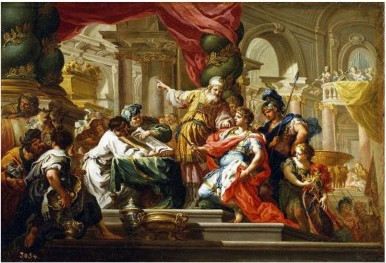

0332 Alexander the Great conquers Persia. On Alexander’s death in 323, his general Seleucus takes the Fertile Crescent, and Ptolemy takes Egypt. Similarities between Jesus and Alexander: divine adoption, dual divine- human parentage, virgin birth, universal transformative mission, death at 33, deification. Conquest of the Holy Land by yet another foreign power in spite of the piety of the state (barring foreign wives and foreign gods), leads to a rejection of the Deuteronomist view and the emergence of Messianic Apocalypticism in the prophet Daniel.

Alexander in the Temple of Jerusalem
Maccabees oppose Antiochus IV
0300 Traditionalists vs. Hellenizers: A prolonged internal struggle begins, manifest early in disputes over the calendar. The common core of Judaism is determined: God as an active element in history, the Torah, support for the Temple, establishment of synagogues, dietary laws, circumcision, the Sabbath, exclusive Yahwism.
~~~~~~~~